Auxiliary equipment and tools

Tools in this document are general-purpose ones available on the market and can be purchased as required.
Compressed air supply system

To avoid personal injury, contact professionals from corresponding manufacturers for handling if the system fails.
-
The compressed air supply system consists of air compressor, air storage tank, freeze dryer, filter, oil-water separator and other important components.
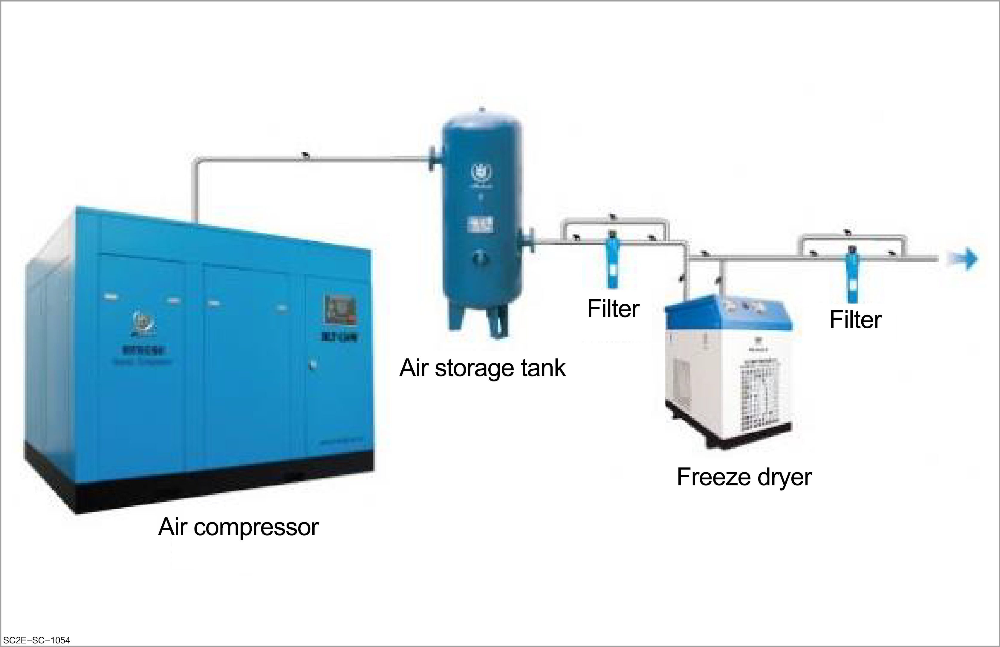
Air compressor
-
Type: It includes the reciprocating piston air compressor and screw air compressor.
-
Reciprocating piston air compressor: It makes use of the reciprocating motion of the piston to compress air. It is characterized by medium air volume, rapid decline in performance with service time, and possible entrance of oil or oil vapor into the compressed air pipeline.
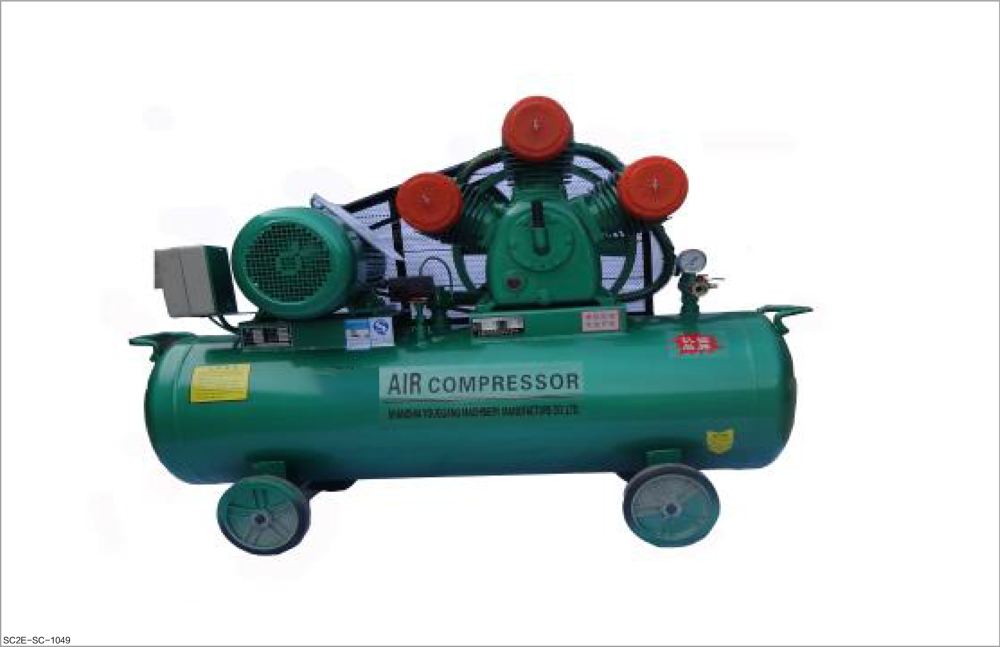
-
Screw air compressor: It generates pressure through the high-speed movement of two uneven rotors. It is characterized by constant wind pressure and air volume, low noise, large air output, clean air, energy saving and high efficiency. It is suitable for repair workshops with large air consumption.
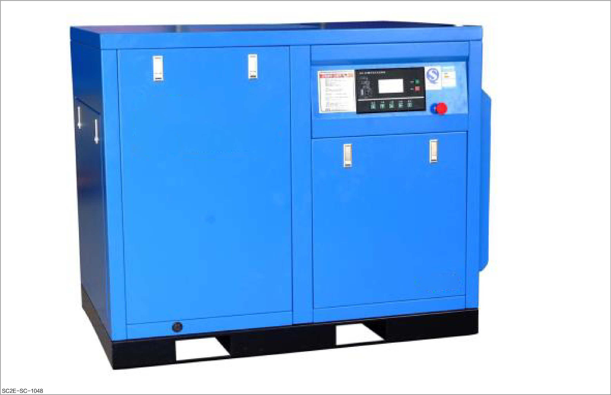
-
Air storage tank
-
Purpose: The air storage tank serves as an energy storage device for compressed air, and stabilizes pressure and ensures a standard supply of air.
-
Instructions for use: Generally, the air storage tank used in the after-sales workshop is 1-2 m³ in capacity with a 1 MPa working pressure. The specific selection of the air storage tank depends on the quantity of pneumatic tools and their frequency of use, that is, on the consumption of compressed air.
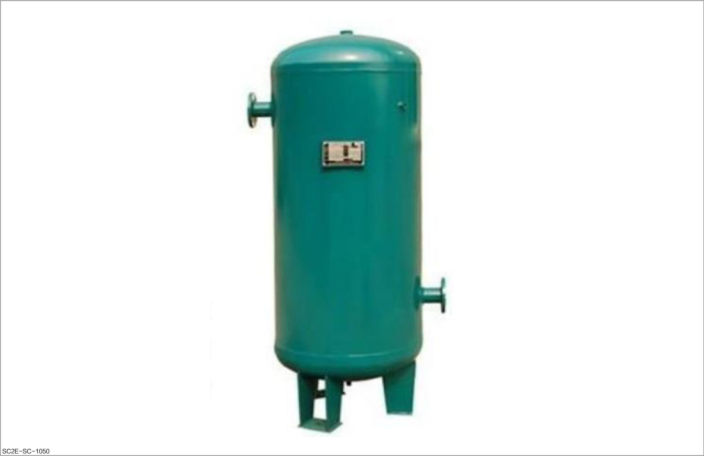
Freeze dryer
-
Purpose: It is used to cool the hot air (up to 100-150°C) compressed by the air compressor, so that the oil and water mixed in the compressed air can be separated and discharged through the filter.
-
Instructions for use: The specifications for the freeze dryer used in the workshop, which repairs around 400 vehicles per month, are as follows: processing capacity: 3.5-4.0 m³/min; working pressure: 1.3 Mpa.
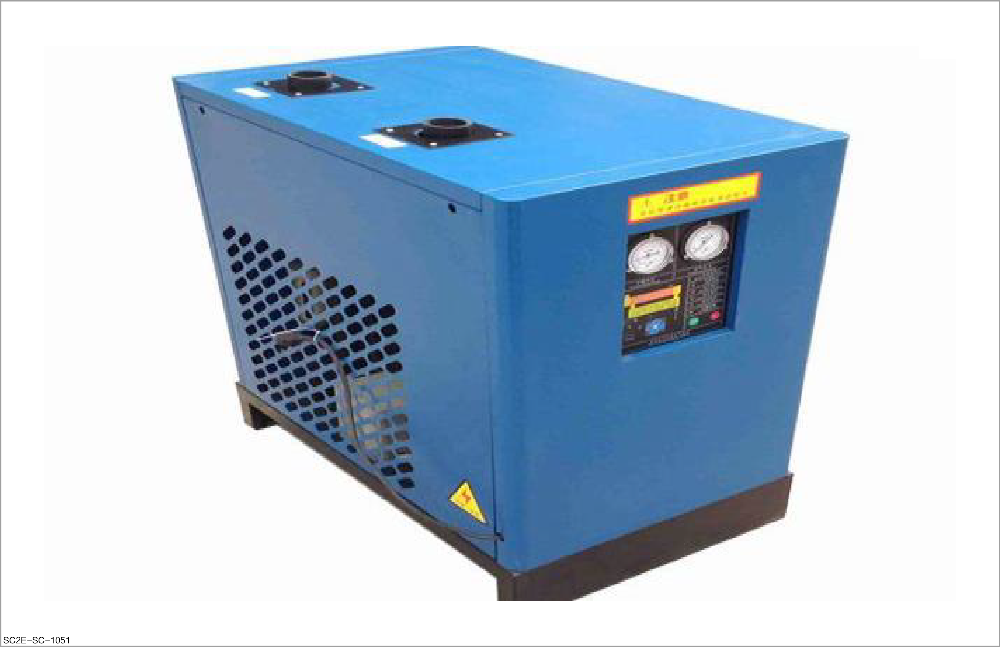
Precision filter
-
Purpose: It is used for filtering and dust removal.
-
Instructions for use:
-
The precision filter has various grades, and the coarse filtration can generally remove dust down to 1 μm. Generally, the fine filter can remove dust down to 0.01 μm.
-
Generally, the treatment capacity of precision filters used in repair shops that repair 400 vehicles per month needs to reach 3.5-4 m³/min.
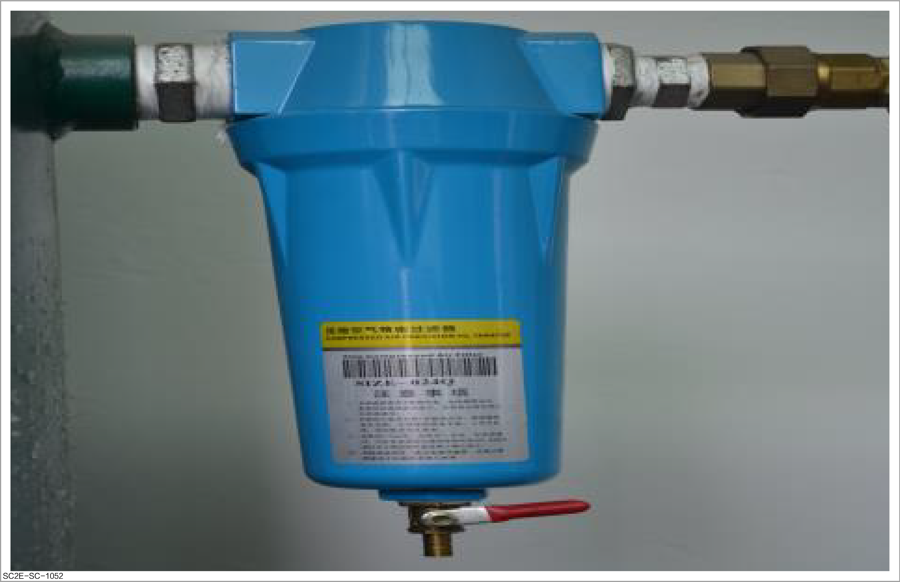
-
Oil-water separator
-
Purpose: It is used to separate oil and water in the air.
-
Instructions for use:
-
In order to ensure a high-quality spraying effect, it is necessary to ensure that the compressed air is dust-free and dry. Therefore, an oil-water separator shall be installed on the air supply pipeline before the compressed air enters the spray booth.
-
The oil and water can be separated from the compressed air by the action of drainage plates, centrifuges, expansion chambers, vibration plates, and filters inside the separator and discharged through manual or automatic drain valves to ensure an output of clean and dry air.
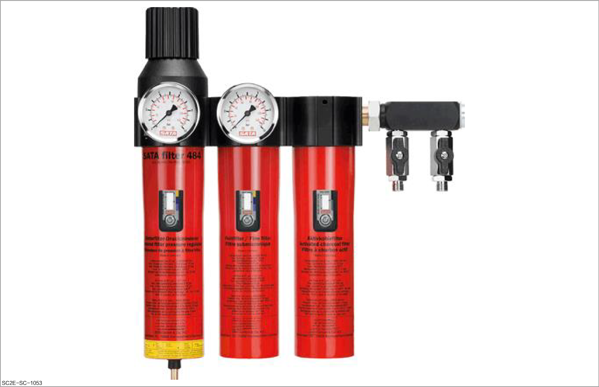
-
Gun tail gauge
-
Purpose: It is used to adjust the spraying pressure of the spray gun, so as to achieve reasonable atomization conditions of the gun.
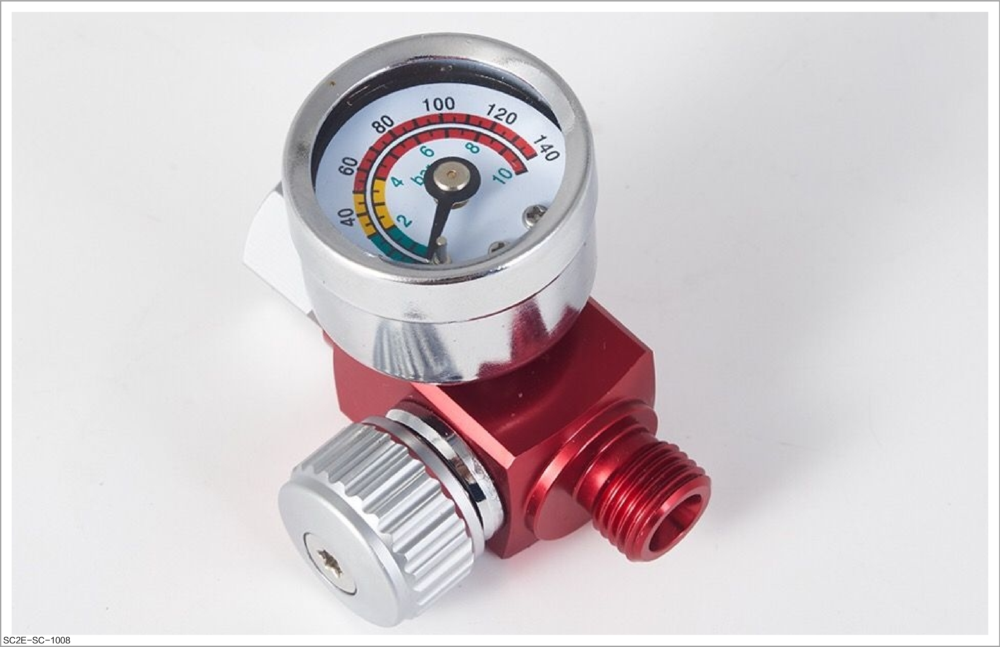
Air blowing gun
-
Purpose: It is used to remove dirt and dust by air pressure.
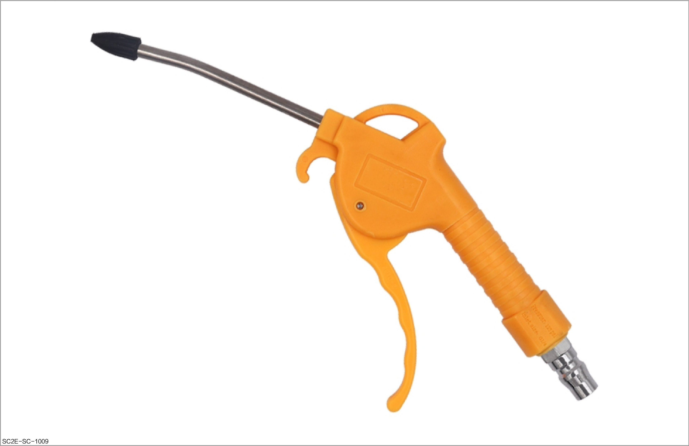
Filter funnel
-
Purpose: It is used for paint filtering and impurity removal when the paint is poured into the spray gun.
-
Instructions for use:
-
The paper funnel has a variety of meshes. Select the appropriate mesh size according to the paint type.
-
For water-based paint, a filter funnel of about 125 μm is recommended.
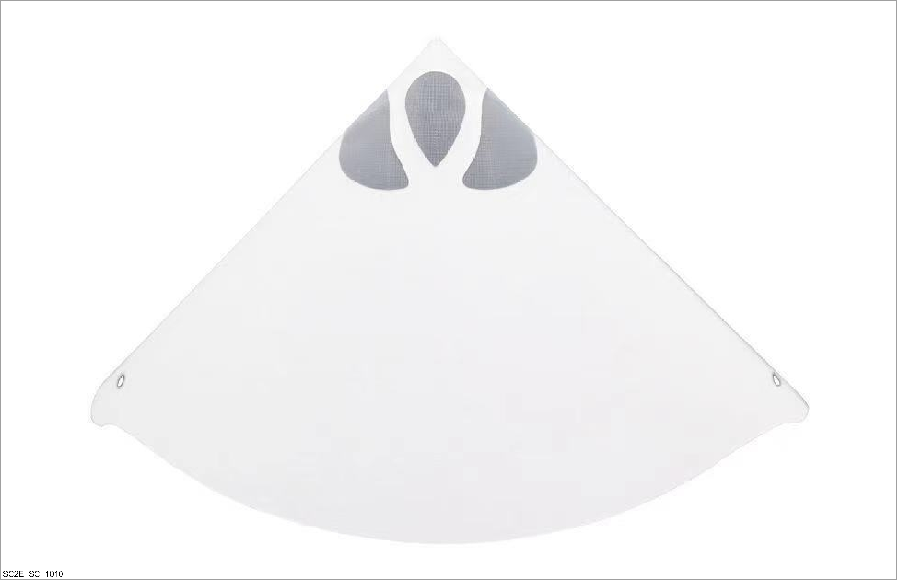
-
Spare part bracket
-
Purpose: It is used to support the spare parts to be sprayed to facilitate spraying or grinding.
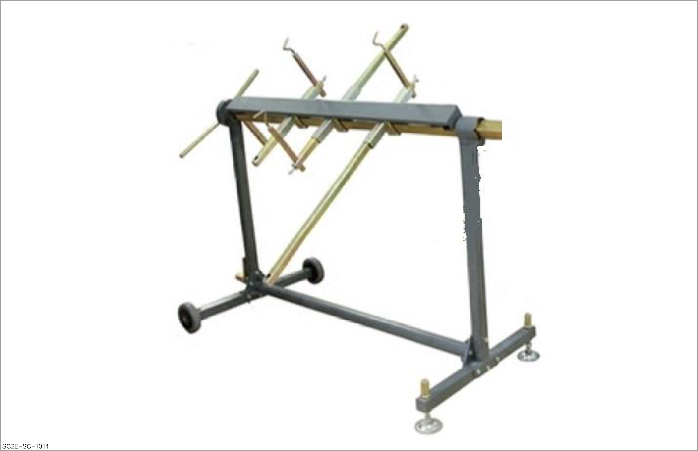